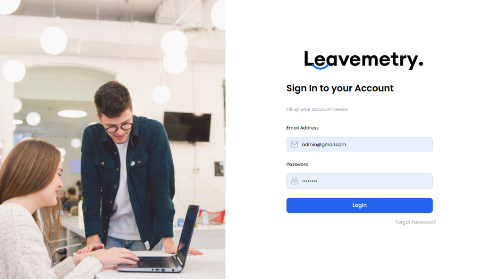
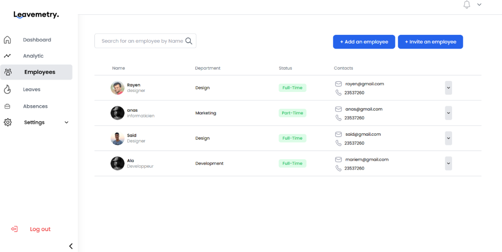
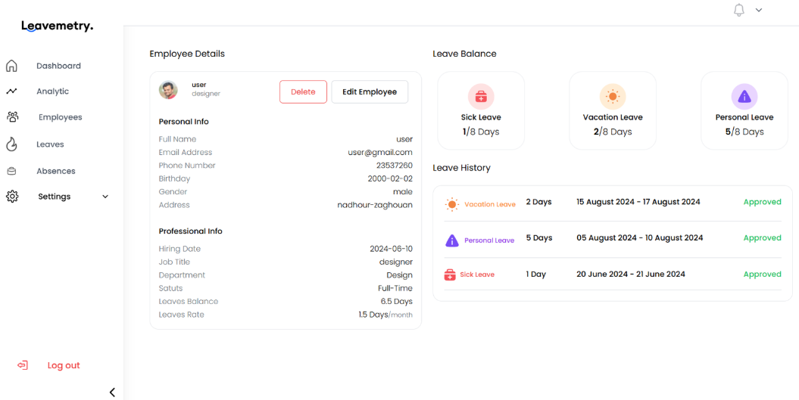
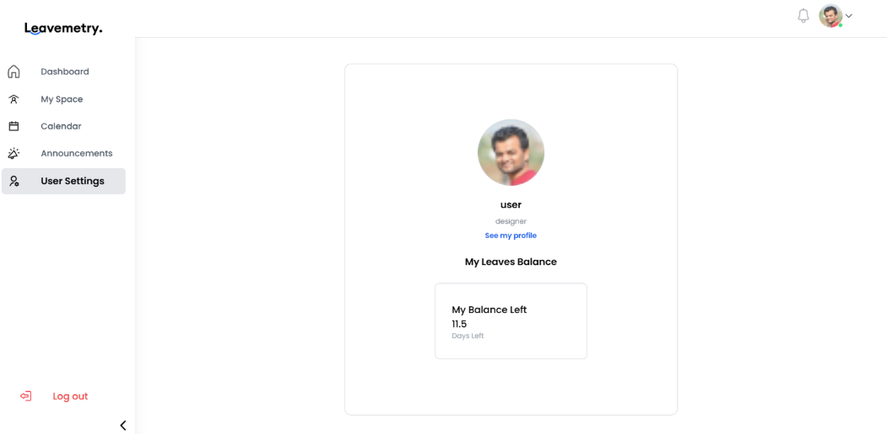

Leavemetry - Gestion des congés
Application web RH | MongoDB · Express.js · React · Node.js
Leavemetry est une application web de gestion des congés développée dans le cadre d'un stage de fin d'études chez Softlynes, avec la stack MERN.
Objectif du projet
Faciliter la soumission et le suivi des demandes de congés par les employés, tout en centralisant le workflow d'approbation et le suivi de la gestion RH.
Ma contribution
- Conception et développement d'un système complet de gestion des congés.
- Mise en place d'un workflow structuré pour les demandes et les approbations.
- Développement d'un tableau de suivi centralisé pour améliorer la visibilité de la gestion RH.
- Participation à la conception de l'expérience utilisateur avec Figma.
Technologies
Informations du projet
- Catégorie Développement web & RH
- Contexte Stage de fin d'études
- Entreprise Softlynes
- Durée Février - Mai 2024
- Code Projet privé de l'entreprise
Captures du projet



